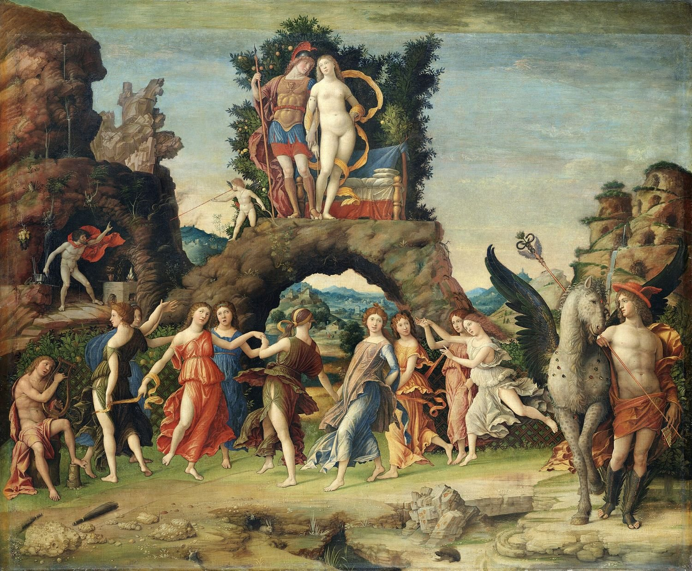
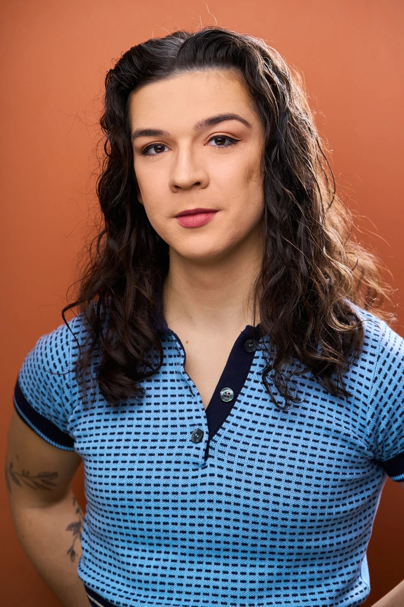

Practical Philosophy of Aegis Astra
Aegis Astra is a NYC-based boutique business management company. We provide loan-out formation, maintenance, reporting services for actors of all levels.
Services
- Tax Preparation & Filing
- Individual Tax Returns
- Multi-State Tax Returns
- Federal & State Tax Filing
- Quarterly Estimated Taxes
- Tax Extension Filing
- Amended Returns
- Prior-Year Tax Resolution
- IRS & State Tax Correspondence
- Loan-Out Administration
- Payroll Administration
- Tax Oversight
Custos Libri
Bennie Trela

As a lifelong actor, I know how overwhelming our world is, what it’s like to wonder where my next gig will come from. At the same time, I’ve spent 11 years in accounting. I’ve audited private equity companies, worked in family offices, and managed financials for Broadway shows. I want to use my powers for good. 8-hour rehearsals and “defining” Alexander Technique are hard enough. Let me handle the business side for you.